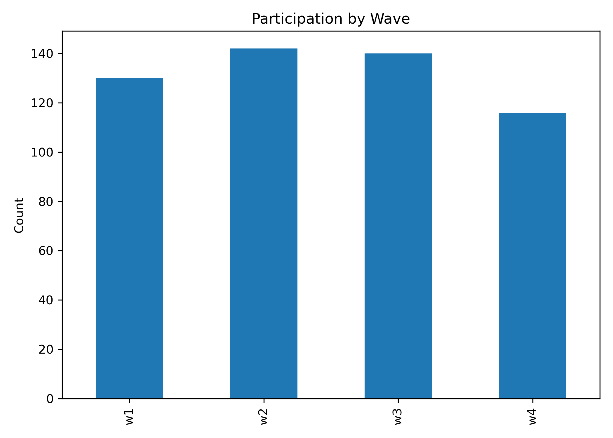
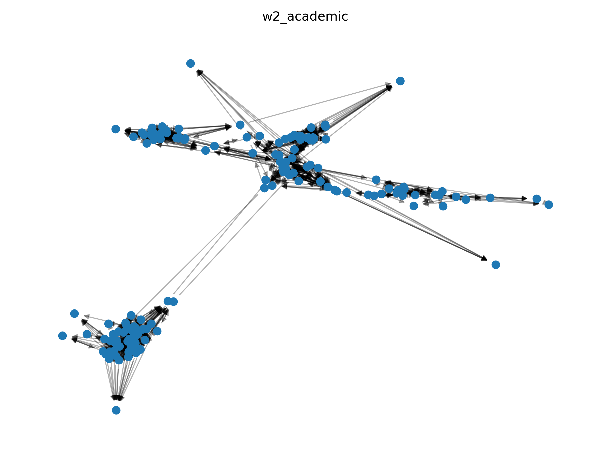
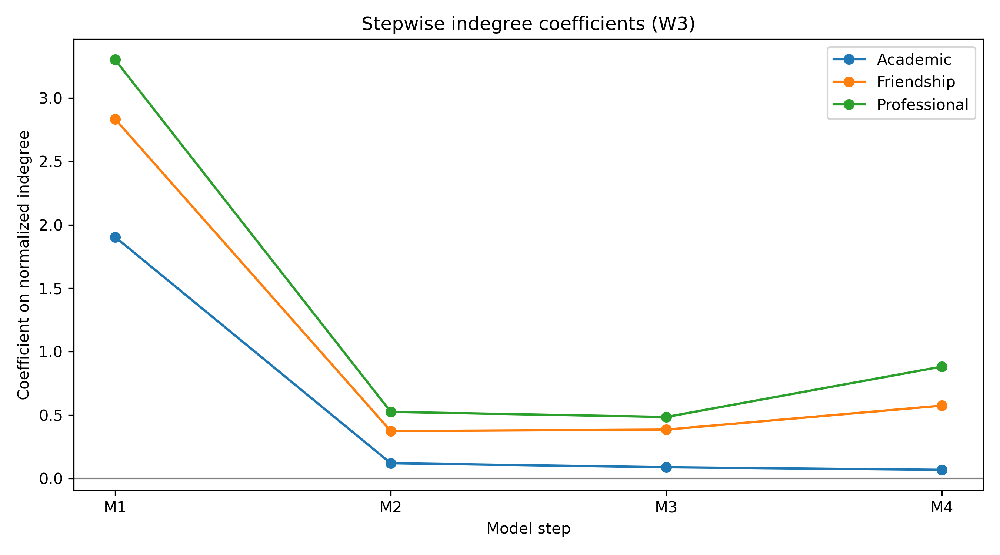
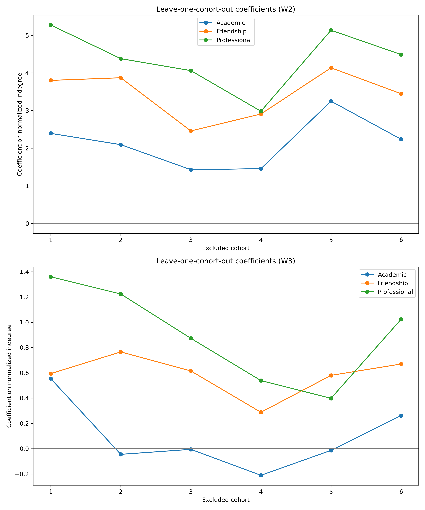

Peer Centrality and Academic Performance
Evidence from a Cohort-Based MSW Program
Being sought out by classmates may signal access to information, support, or an existing reputation for achievement. This study links repeated peer nominations to later grades to examine how network prominence and academic performance are associated at different stages of a graduate program.
Does network prominence anticipate later achievement?
Being sought out by peers may reflect access to support, academic standing, or selection among similar students. This project asks whether incoming nominations in academic, friendship, and professional networks are associated with later GPA after accounting for earlier achievement—and whether the answer changes across academic stages.
Incoming nominations capture recognition by other students, which may differ from how sociable a student considers themselves. Academic discussion concerns help with coursework; friendship captures personal ties; professional influence concerns recognition in social-work development. Keeping these networks separate tests whether different kinds of peer prominence carry similar information about later academic performance.
A social-capital perspective treats relationships as channels for information, shared expectations, and support (Coleman, 1988). A review of higher education research links social networks and support to academic success (Mishra, 2020). The distinction among nomination networks gives this argument more specificity: academic discussion may locate help with coursework, friendship may reflect trust and emotional support, and professional influence may capture peer-recognized competence.
Research in cohort-based MSW education shows how shared classes and repeated contact structure these different ties (Mauldin et al., 2017, 2022). This project shifts attention from the formation of relationships to whether prominence within each network carries information about later grades.
Repeated peer networks in a graduate program
The Peer relationships among Master of Social Work students dataset by Rebecca Mauldin and colleagues is available through the University of Texas at Arlington’s institutional repository. It follows MSW students in a large U.S. public university, combining repeated academic-discussion, friendship, and professional-influence nominations with student attributes and achievement measures. The cohort structure and repeated observations allow network position to precede the GPA outcome.
The total roster contains 145 student records. Wave participation is distinct from roster size: 130 students participate in W1, 142 in W2, 140 in W3, and 116 in W4. Wave-two centrality predicts fall 2014 GPA, adjusting for GPA from the last 60 undergraduate credit hours. Wave-three centrality predicts fall 2015 GPA, adjusting for fall 2014 GPA. Fully adjusted models include 137 and 114 observations respectively.

View full-size figure
{kind=link}
The participation figure distinguishes the student roster from the number observed in a survey or regression. This distinction matters when comparing early and later estimates: a smaller later model sample provides less information, and the students retained may differ from those lost to follow-up. Repeated observations establish temporal ordering, but they do not remove these changes in coverage.
The public longitudinal data (Mauldin et al., 2020) make it possible to distinguish early peer prominence from relationships observed after an in-program academic record has developed.
Network structure and prior achievement

View full-size figure
{kind=link}
Normalized incoming degree is the share of possible incoming nominations received. Models add prior GPA, age and sex, and fixed effects for six cohorts in sequence, using HC3 robust standard errors. Separate models examine each network; combined models enter all three centralities together. This adjustment does not experimentally separate social influence from selection.
The academic network is denser than the friendship and professional networks at wave two. Its many nominations make the visual pattern of connection useful context, but density describes the network as a whole; incoming degree describes a student’s position within it. Cohort fixed effects then compare students while accounting for differences associated with their assigned cohorts.
The choice of incoming degree follows Freeman’s (1979) distinction among forms of centrality: nominations received capture prominence recognized by others. However, achievement and network position may develop together. Research on selection and peer processes (Vignery & Laurier, 2020; Brouwer et al., 2022) motivates the prior-GPA adjustment and cautions against interpreting lagged associations as pure social influence.
Early associations persist; later ones attenuate

View full-size figure
In the fully adjusted separate-network models, a 0.01 increase in normalized incoming degree is associated with approximately 0.021 GPA points for academic ties, 0.035 for friendship, and 0.044 for professional ties. These increments are shares of possible nominations, not single nominations.
Later bivariate associations are positive but shrink markedly after adjustment for prior in-program GPA. Fully adjusted intervals include zero. When all three early centralities enter together, their correlated information makes individual estimates less precise; none reaches the conventional 5% threshold.

View full-size figure
{kind=link}
The later adjustment plot locates the main change at M2, when fall 2014 GPA enters. The additional demographic and cohort controls make much smaller changes. Later centrality therefore tracks achievement descriptively, but carries little additional information once established in-program performance is known. The early model conditions on a different baseline—undergraduate grades—so the timing contrast also involves different measures of prior achievement.
Does the result depend on a single cohort?
Leaving out each cohort in turn preserves clearer early associations than later ones. Early academic, friendship, and professional estimates reach the 5% threshold in four, five, and six of the six omissions respectively; no later estimate does so. PageRank-based models likewise give clearer early friendship and professional associations and imprecise later estimates.

View full-size figure
{kind=link}
Cohort omission asks whether one part of the program drives the association; replacing indegree with PageRank asks whether the result depends on counting all nominations equally. These checks address different sensitivities. The weaker academic-network evidence under some alternatives, and the overlap among network types in combined models, make a uniform claim about all peer ties too strong.
When network position carries additional information
Early network prominence carries information beyond available pre-program grades; later prominence adds much less after accounting for in-program achievement. The contrast is compatible with support and selection operating together.
Attrition, missing nominations, bounded GPA outcomes, and unmeasured student characteristics constrain interpretation. Evidence that changing relationships improves learning would be needed before recommending an intervention to increase centrality.
The outcome distribution also sets limits on what can be detected: later GPA is high and more compressed than early GPA. An imprecise later coefficient cannot establish that peer relationships cease to matter for learning, professional development, or support. It establishes a narrower result about their additional association with the measured grades under these controls.
References
Brouwer, J., de Matos Fernandes, C. A., Steglich, C. E. G., Jansen, E. P. W. A., Hofman, W. H. A., & Flache, A. (2022). The development of peer networks and academic performance in learning communities in higher education. Learning and Instruction, 80, 101603. https://doi.org/10.1016/j.learninstruc.2022.101603
Coleman, J. S. (1988). Social capital in the creation of human capital. American Journal of Sociology, 94(Supplement), S95–S120. https://doi.org/10.1086/228943
Freeman, L. C. (1979). Centrality in social networks: Conceptual clarification. Social Networks, 1(3), 215–239. https://doi.org/10.1016/0378-8733(78)90021-7
Mauldin, R. L., Barros-Lane, L., Tarbet, Z., Fujimoto, K., & Narendorf, S. C. (2022). Cohort-based education and other factors related to student peer relationships: A mixed-methods social network analysis. Education Sciences, 12(3), 205. https://doi.org/10.3390/educsci12030205
Mauldin, R. L., Narendorf, S. C., Herrera, S., & Tarbet, Z. (2020). Peer relationships among Master of Social Work students: Social network data [Dataset]. Texas Data Repository Dataverse. https://doi.org/10.18738/T8/5ELWBV
Mauldin, R. L., Narendorf, S. C., & Mollhagen, A. (2017). Relationships among diverse peers in a cohort-based MSW program: A social network analysis. Journal of Social Work Education, 53(4), 684–698. https://doi.org/10.1080/10437797.2017.1284628
Mishra, S. (2020). Social networks, social capital, social support and academic success in higher education: A systematic review with a special focus on ‘underrepresented’ students. Educational Research Review, 29, 100307. https://doi.org/10.1016/j.edurev.2019.100307
Vignery, K. L., & Laurier, W. (2020). Achievement in student peer networks: A study of the selection process, peer effects and student centrality. International Journal of Educational Research, 99, 101499. https://doi.org/10.1016/j.ijer.2019.101499